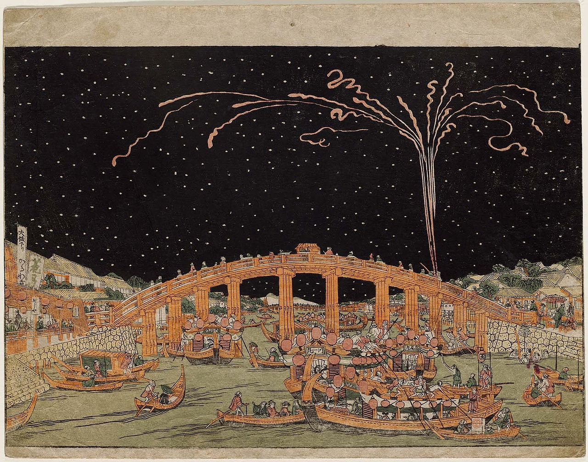

Shifting Subjects: Foreign Figures in Japanese Art
An exploration of the western influence on ukiyo-e
Introduction
Since the 1600s Japan was an almost completely isolated society and took a fierce stance against foreign influence, only conducting trade with the Dutch and Chinese in a few specific ports. This led Japan to be increasingly disconnected from the world in many aspects of culture and technology, including art. This changed however with Commodore Mathew Perry’s forceful introduction in 1853. Bringing with him several intimidating warships, Perry forced Japan to open to foreign trade and influence. This resulted in the Treaty of Peace and Amity, which forced Japan to open up the ports of Shimoda & Hakodate. This slight deviation from isolationism would have a profound impact on the future of Japan. Shortly after this treaty, Japan began a period known as the Meiji Restoration which saw major overhauls in Japan's government, military, and society to be more reminiscent of the current Western superpowers. This period of restoration also had a major, less direct effect on the culture and art present in Japan.
A dipiction of Commodore Perry’s warships - unknown
Male prostitutes & ladies in waiting in a Green house (brothel) - Utagawa Toyokuni I
One of the most prevalent forms of art in Japan during their isolationist period was woodblock prints known as ukiyo-e. Emerging in the early 1600s in modern-day Tokyo, ukiyo-e became a part of the growing lifestyle of ukiyo loosely translating to “floating/fleeting/transient world”. This word was used to describe the new raw pleasure-seeking lifestyle emerging in the urban centers of Japan. Ukiyo-e sought to capture this lifestyle in print, meaning that the subjects for these works were often prostitutes, geishas, and samurai. This style remained popular into the 18th century when Japan ended its isolation. Many ukiyo-e prints were shared around the world and became sources of inspiration for the growing impressionist movement in Europe. Western influences also impacted ukiyo-e, greatly increasing the variety of subjects in the medium.
One of the schools that saw the biggest influence from the new Western ideologies was the Utagawa school. This school was one of the biggest and most influential schools in the ukiyo-e movement, producing around half of the known ukiyo-e prints. All of the prints in this gallery were made by students from this school, which can be seen by the fact that all the artists share the same last name Utagawa. During this period in Japan, it was customary for artists to take on the last names of their masters, with the following numbers outlying their hierarchy in the school. The Utugawa school was the first school to popularize the Yokohama-e style of woodblock prints which depicted foreigners as the subject, named after a popular port city that foreigners would frequent. Each of the pieces in this gallery portrays different aspects of the Yaokohama-e style. This includes views into foreign cities in America, a juxtaposition of several cultures with An American, A French Woman, and A Chinese Servant, and views into new Western technology with An Interior of an American Steamship.

Fireworks at Ryōgoku Bridge - Utagawa Toyoharu (Founder of the Utagawa School)
See Gallery